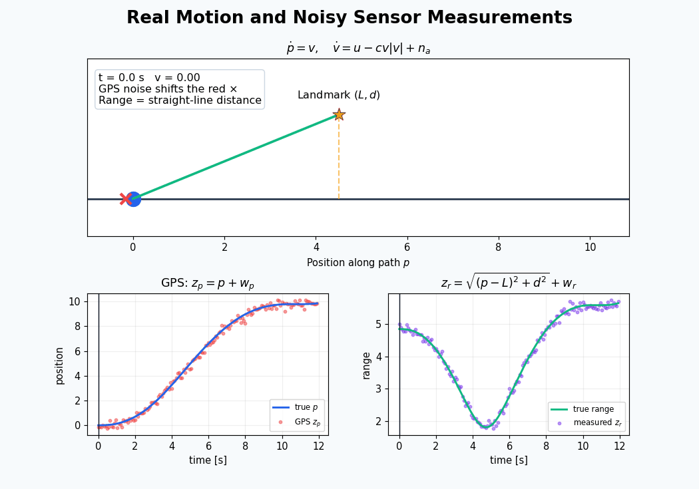

Continuous Kalman filter
Start with linear motion and continuously available position measurements.
Interactive notebook · State estimation
Use one simulated 1D robot to understand how estimators combine physics and noisy sensors—from the basic Kalman filter to nonlinear observers.
The central idea
The robot state contains position and velocity. Its motion model predicts how that state evolves, while noisy GPS or range measurements reveal the prediction error. Every estimator in the lab repeats this predict–correct pattern in a different setting.
state x = [position, velocity]→prediction + measurement → corrected estimate
Learning path
Start with linear motion and continuously available position measurements.
Predict between measurements and correct only when a sensor sample arrives.
Linearize nonlinear drag and landmark-range models around the current estimate.
Check whether position measurements contain enough information to recover velocity.
Compare probabilistic filtering with Luenberger and nonlinear fixed-gain observers.


Comparison
The useful choice depends on model fidelity, sensor timing, nonlinearities, uncertainty information, and the required computational cost. The final notebook section compares position and velocity RMSE across the estimators.

Experiments